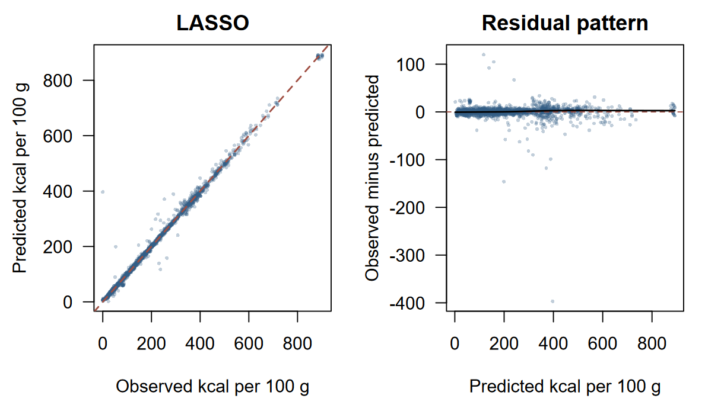

Machine learning · Individual NEC coursework
Nutrition prediction with regularization
CV-selected LASSO: 14.47 kcal/100g held-out RMSE.
A comparison of LASSO, Ridge and Elastic Net using shared cross-validation folds, careful missing-value handling and a held-out food-record evaluation.
Approach
- Split 8,789 foods by food group into 7,022 development and 1,767 held-out records.
- Used 33 numeric nutrient predictors plus food group, excluding IDs, names and portion weights.
- Compared 1,111 alpha/lambda settings with five shared folds and fitting-fold imputation and missingness indicators.
- Selected by cross-validation error, then reported test RMSE, MAE, R-squared and coefficient counts for all three techniques.
Results
Selection used cross-validation. Test values describe held-out performance, in kcal/100g.
| Technique | CV RMSE | Test RMSE | Role |
|---|---|---|---|
| LASSO | 11.9552 | 14.4659 | Selected by CV |
| Ridge | 12.0025 | 14.3998 | Comparison |
| Elastic Net | 11.9557 | 14.4708 | Comparison |


What I learned
The small test-error spread is less informative than the selection discipline. LASSO retained 63 of 88 design columns, and the near tie provides no basis for claiming a meaningful advantage for one penalty family.
Limits
These are saved internal food-record results, without a new model run. Similar formulations may occur in both partitions, so transfer to new product families remains untested. Total carbohydrate is absent from the export. Coefficients describe conditional associations, not causal nutrient effects or dietary recommendations; high aggregate fit still includes large individual errors.
Next step
Keep related food formulations in the same partition and test nonlinear effects to assess performance on genuinely different food groups or product families.